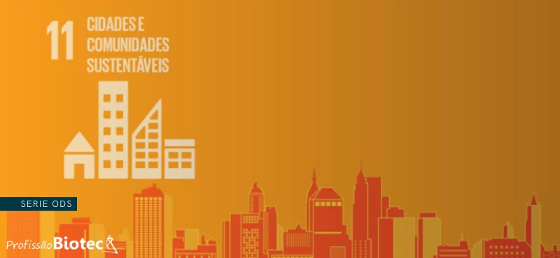

Limpando o Mundo
Um jogo educativo sobre conscientização ambiental com diversão competitiva!


ODS 11 - Cidades e Comunidades Sustentáveis

Nosso jogo está alinhado com o Objetivo de Desenvolvimento Sustentável 11 da ONU, que visa tornar as cidades e os assentamentos humanos inclusivos, seguros, resilientes e sustentáveis.
Através da gamificação, conscientizamos sobre a importância da limpeza urbana e da coleta seletiva, contribuindo para cidades mais limpas e saudáveis.
O jogo aborda especificamente a meta 11.6: 'Até 2030, reduzir o impacto ambiental negativo per capita das cidades, inclusive prestando especial atenção à qualidade do ar, gestão de resíduos municipais e outros.'